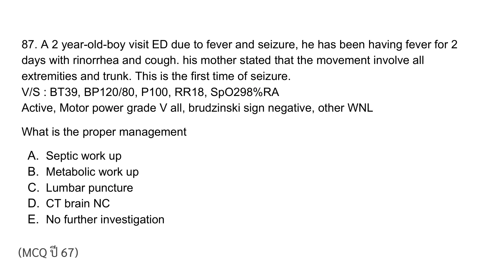
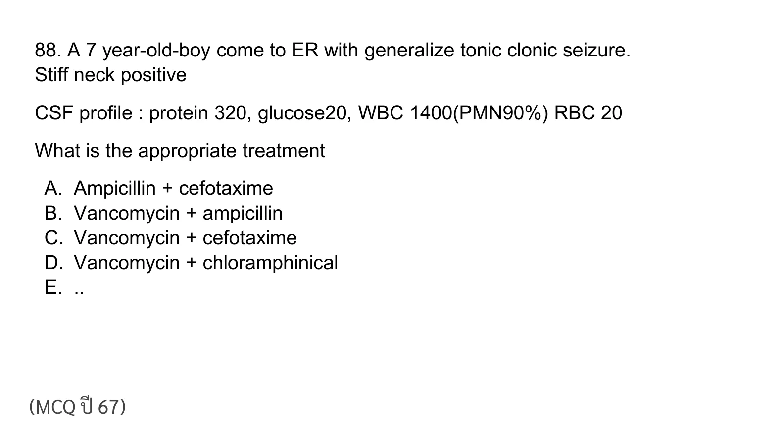
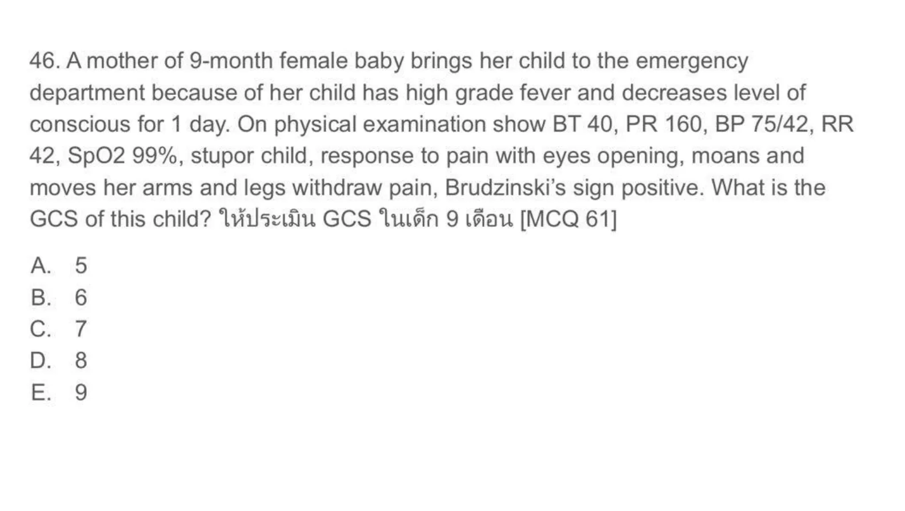
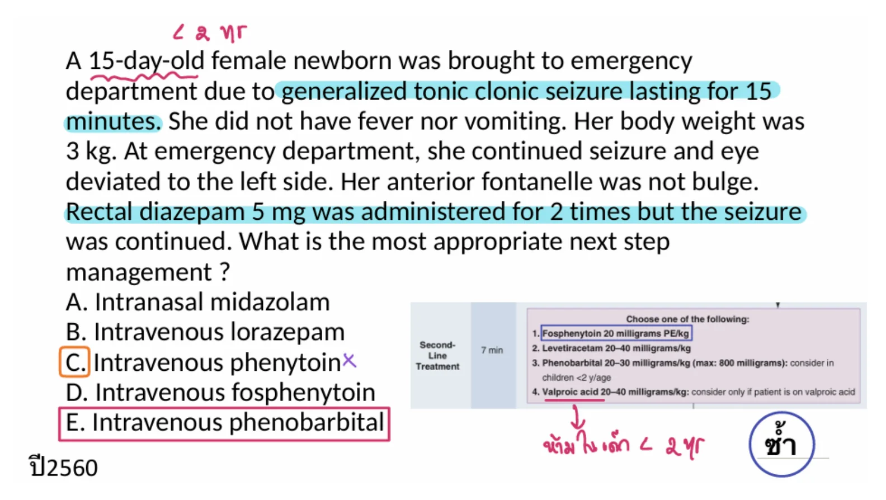
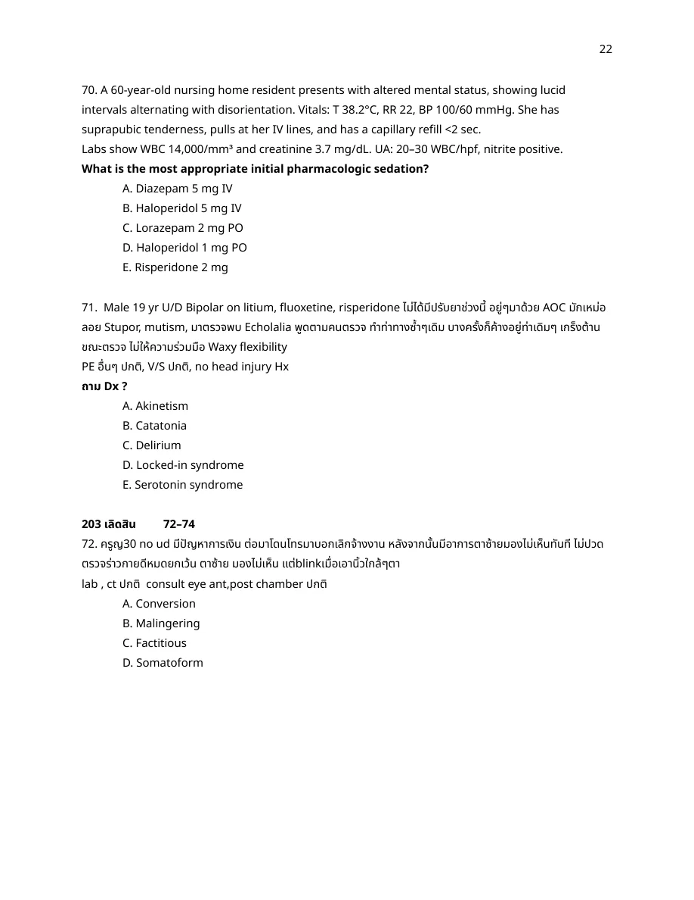
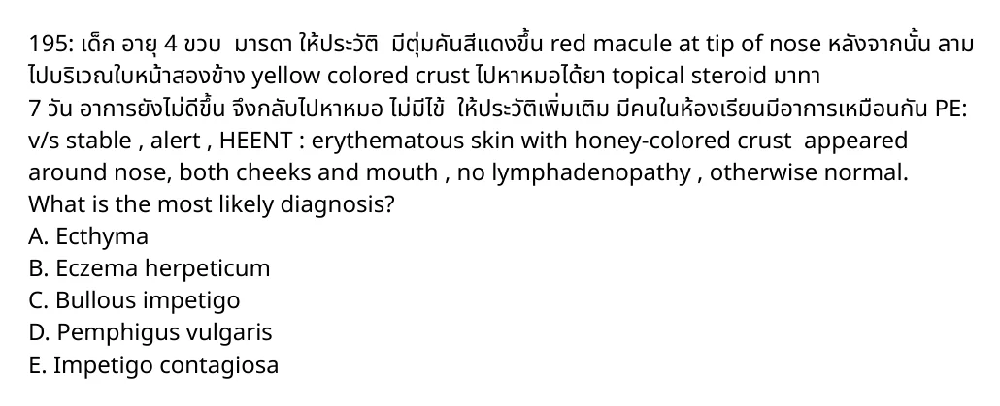

Pediatric GCS: eye opening to pain = E2, moaning/incomprehensible vocal response = V2, abnormal flexion/decorticate posture to pain = M3. Total = 2 + 2 + 3 = 7. Lower limb extension is described, but best motor response uses the best observed response; the arm/wrist flexion pattern fits abnormal flexion.
References
- Pediatric GCS scoring reference: eye opening, verbal response, and motor response are summed from best observed responses. https://www.ncbi.nlm.nih.gov/books/NBK513298/
A03-0002A03-Q0002solution_ready
87. A 2 year-old-boy visit ED due to fever and seizure, he has been having fever for 2 days with rinorrhea and cough. his mother stated that the movement involve all extremities and trunk. This is the first time of seizure. V/S: BT39, BP120/80, P100, RR18, SpO2 98% RA Active, Motor power grade V all, brudzinski sign negative, other WNL
What is the proper management

p4
ยังไม่ถูก
A. Septic work up
ยังไม่ถูก
B. Metabolic work up
ยังไม่ถูก
C. Lumbar puncture
ยังไม่ถูก
D. CT brain NC
ถูกต้อง
This is a first simple febrile seizure pattern: age 2 years, generalized seizure, fever/URI source, child is now active with normal neurologic exam and no meningeal signs. In a well-appearing child with simple febrile seizure, routine metabolic workup, septic workup, CT, and LP are not indicated.
This is a first simple febrile seizure pattern: age 2 years, generalized seizure, fever/URI source, child is now active with normal neurologic exam and no meningeal signs. In a well-appearing child with simple febrile seizure, routine metabolic workup, septic workup, CT, and LP are not indicated.
References
- RCH Clinical Practice Guideline, Febrile seizure: simple febrile seizures usually require no investigations when the child returns to baseline and no CNS infection signs are present. https://www.rch.org.au/clinicalguide/guideline_index/Febrile_seizures/
A03-0003A03-Q0003solution_ready
88. A 7 year-old-boy come to ER with generalize tonic clonic seizure. Stiff neck positive
CSF profile: protein 320, glucose20, WBC 1400(PMN90%) RBC 20
What is the appropriate treatment

p6
ยังไม่ถูก
A. Ampicillin + cefotaxime
ยังไม่ถูก
B. Vancomycin + ampicillin
ถูกต้อง
CSF shows bacterial meningitis: very high WBC with PMN predominance, low glucose, and high protein. For a 7-year-old, empiric therapy should cover pneumococcus including resistant strains plus common pediatric bacterial pathogens, so vancomycin plus a third-generation cephalosporin such as cefotaxime/ceftriaxone is appropriate.
CSF shows bacterial meningitis: very high WBC with PMN predominance, low glucose, and high protein. For a 7-year-old, empiric therapy should cover pneumococcus including resistant strains plus common pediatric bacterial pathogens, so vancomycin plus a third-generation cephalosporin such as cefotaxime/ceftriaxone is appropriate.
References
- IDSA bacterial meningitis guideline: empiric pediatric therapy commonly uses vancomycin plus a third-generation cephalosporin when pneumococcal resistance is a concern. https://academic.oup.com/cid/article/39/9/1267/402080
Generalized seizure lasted 10 minutes, stopped before arrival, glucose normal, no meningeal sign, and the child is otherwise stable. This remains a simple febrile seizure if total duration is under 15 minutes and there is no focality or recurrence in 24 hours; long-term/oral antiepileptic, IV antiepileptic, septic workup, and LP are not needed in a well child. Discharge with education and follow-up is the best choice.
Generalized seizure lasted 10 minutes, stopped before arrival, glucose normal, no meningeal sign, and the child is otherwise stable. This remains a simple febrile seizure if total duration is under 15 minutes and there is no focality or recurrence in 24 hours; long-term/oral antiepileptic, IV antiepileptic, septic workup, and LP are not needed in a well child. Discharge with education and follow-up is the best choice.
References
- RCH Clinical Practice Guideline, Febrile seizure: simple febrile seizure management is supportive, with discharge when returned to baseline and serious causes excluded clinically. https://www.rch.org.au/clinicalguide/guideline_index/Febrile_seizures/
The likely intended drug is prochlorperazine, a dopamine antagonist used for acute migraine in the ED. Opioids such as tramadol/codeine are not preferred. Ketorolac is reasonable as an NSAID, but the stem says ibuprofen was already tried without relief, making prochlorperazine the better next acute regimen among the choices.
The likely intended drug is prochlorperazine, a dopamine antagonist used for acute migraine in the ED. Opioids such as tramadol/codeine are not preferred. Ketorolac is reasonable as an NSAID, but the stem says ibuprofen was already tried without relief, making prochlorperazine the better next acute regimen among the choices.
References
- RCH Clinical Practice Guideline, Headache: acute migraine treatment includes analgesia/NSAIDs and antiemetic dopamine antagonists when needed; opioids should be avoided. https://www.rch.org.au/clinicalguide/guideline_index/headache/
After adequate benzodiazepine treatment has failed, the next phase is second-line antiseizure loading, commonly fosphenytoin/phenytoin, levetiracetam, valproate, or phenobarbital depending on context. In this option set, Dilantin is the appropriate second-line choice.
After adequate benzodiazepine treatment has failed, the next phase is second-line antiseizure loading, commonly fosphenytoin/phenytoin, levetiracetam, valproate, or phenobarbital depending on context. In this option set, Dilantin is the appropriate second-line choice.
References
- American Epilepsy Society guideline for convulsive status epilepticus: after benzodiazepines, reasonable second-line options include fosphenytoin, valproate, and levetiracetam. https://pmc.ncbi.nlm.nih.gov/articles/PMC4749120/
A03-0007A03-Q0007solution_ready
46. A mother of 9-month female baby brings her child to the emergency department because of her child has high grade fever and decreases level of conscious for 1 day. On physical examination show BT 40, PR 160, BP 75/42, RR 42, SpO2 99%, stupor child, response to pain with eyes opening, moans and moves her arms and legs withdraw pain, Brudzinski’s sign positive. What is the GCS of this child? ให้ประเมิน GCS ในเด็ก 9 เดือน [MCQ 61]

p30
ยังไม่ถูก
A. 5
ยังไม่ถูก
B. 6
ยังไม่ถูก
C. 7
ถูกต้อง
Pediatric GCS: opens eyes to pain = E2; moans = V2; withdraws/moves arms and legs away from pain = M4. Total = 2 + 2 + 4 = 8.
Pediatric GCS: opens eyes to pain = E2; moans = V2; withdraws/moves arms and legs away from pain = M4. Total = 2 + 2 + 4 = 8.
References
- Pediatric GCS scoring reference: use the best eye, verbal, and motor responses. https://www.ncbi.nlm.nih.gov/books/NBK513298/
A03-0008A03-Q0008solution_ready
A 15-day-old female newborn was brought to emergency department due to generalized tonic clonic seizure lasting for 15 minutes. She did not have fever nor vomiting. Her body weight was 3 kg. At emergency department, she continued seizure and eye deviated to the left side. Her anterior fontanelle was not bulge. Rectal diazepam 5 mg was administered for 2 times but the seizure was continued. What is the most appropriate next step management?

p32
ยังไม่ถูก
A. Intranasal midazolam
ยังไม่ถูก
B. Intravenous lorazepam
ยังไม่ถูก
C. Intravenous phenytoin
ยังไม่ถูก
D. Intravenous fosphenytoin
ถูกต้อง
This is a 15-day-old neonate with ongoing seizure after benzodiazepine exposure. Phenobarbital remains the standard first-line antiseizure medication for neonatal seizures; phenytoin/fosphenytoin can be later options, but phenobarbital is the best next step among the listed drugs.
This is a 15-day-old neonate with ongoing seizure after benzodiazepine exposure. Phenobarbital remains the standard first-line antiseizure medication for neonatal seizures; phenytoin/fosphenytoin can be later options, but phenobarbital is the best next step among the listed drugs.
References
- ILAE neonatal seizure guideline/report: phenobarbital is recommended as first-line antiseizure medication for neonatal seizures. https://www.ilae.org/guidelines/guidelines-and-reports/guidelines-on-neonatal-seizures
After diazepam/benzodiazepine does not stop convulsive status epilepticus, move to second-line loading therapy. The source crop for this row shows phenytoin/fosphenytoin as the intended second-line answer; guideline-consistent modern wording is fosphenytoin or phenytoin loading.
References
- American Epilepsy Society guideline for convulsive status epilepticus: second-line therapy after benzodiazepines includes fosphenytoin, valproate, or levetiracetam. https://pmc.ncbi.nlm.nih.gov/articles/PMC4749120/
Two doses of diazepam/Valium have failed, so do not keep escalating benzodiazepine. The next step is second-line antiseizure loading. In this older option set, phenytoin is the intended equivalent of modern fosphenytoin/phenytoin loading.
Two doses of diazepam/Valium have failed, so do not keep escalating benzodiazepine. The next step is second-line antiseizure loading. In this older option set, phenytoin is the intended equivalent of modern fosphenytoin/phenytoin loading.
References
- American Epilepsy Society guideline for convulsive status epilepticus: second-line therapy after benzodiazepines includes fosphenytoin/phenytoin-equivalent options. https://pmc.ncbi.nlm.nih.gov/articles/PMC4749120/
Rectal diazepam twice has failed, so the next step is second-line loading. Fosphenytoin is preferred over phenytoin when available because it is easier/safer to administer IV, though the older source notes may call this “phenytoin.”
References
- American Epilepsy Society guideline for convulsive status epilepticus: fosphenytoin is one accepted second-line agent after benzodiazepines. https://pmc.ncbi.nlm.nih.gov/articles/PMC4749120/
A03-0012A03-Q0012solution_ready
เด็กชัก paramedic ให้ diazepam ทางก้นมา 2 ครั้งแล้วไม่หยุด ที่ ER ให้อะไรต่อ iv lorazepam iv phenytoin iv fosphenytoin iv phenobarbital
The child already received two rectal diazepam doses before arrival. In this older Thai option set, IV phenytoin is the expected second-line loading medication after benzodiazepine failure. Modern alternatives include fosphenytoin, levetiracetam, and valproate depending on protocol.
References
- American Epilepsy Society guideline for convulsive status epilepticus: second-line therapy after benzodiazepines includes fosphenytoin/phenytoin-equivalent options. https://pmc.ncbi.nlm.nih.gov/articles/PMC4749120/
Fever for a few days followed by rash as fever comes down is classic roseola infantum/exanthem subitum, most commonly caused by HHV-6. Measles usually has cough/coryza/conjunctivitis and rash with high fever, not rash appearing after defervescence.
Fever for a few days followed by rash as fever comes down is classic roseola infantum/exanthem subitum, most commonly caused by HHV-6. Measles usually has cough/coryza/conjunctivitis and rash with high fever, not rash appearing after defervescence.
References
- Merck Manual Professional, Roseola Infantum: high fever followed by a maculopapular rash as fever resolves, usually due to HHV-6. https://www.merckmanuals.com/professional/pediatrics/miscellaneous-viral-infections-in-infants-and-children/roseola-infantum
A03-0014A03-Q0014solution_ready
82. เด็ก 3 ปี แม่พามา วันนี้ irritable, lethargic especially during feeding BT 37.2 RR4 BP70/50 HR240 PE: ปกติหมด neuro active ดี. ได้ให้ IV NSS แล้ว EKG: SVT rate 240 ถาม Mx
crop
ยังไม่ถูก
A. NSS
ยังไม่ถูก
B. Carotid massage
ยังไม่ถูก
C. Adenosine
ถูกต้อง
SVT at 240 with lethargy, severe bradypnea/respiratory failure, and hypotension (70/50) is unstable. Unstable pediatric tachyarrhythmia requires synchronized cardioversion. Adenosine is for stable regular narrow-complex SVT or can be considered only if it does not delay cardioversion.
SVT at 240 with lethargy, severe bradypnea/respiratory failure, and hypotension (70/50) is unstable. Unstable pediatric tachyarrhythmia requires synchronized cardioversion. Adenosine is for stable regular narrow-complex SVT or can be considered only if it does not delay cardioversion.
References
- RCH Clinical Practice Guideline, SVT: unstable child with shock/altered conscious state needs synchronized cardioversion. https://www.rch.org.au/clinicalguide/guideline_index/Supraventricular_Tachycardia_SVT/
A03-0015A03-Q0015solution_ready
53. ญ 45 ปี มี flaccid bullae. Involve oral mucosa, spare palm and sole. Test nikolsky positive
crop
ยังไม่ถูก
A. S.aureous
ยังไม่ถูก
B. Gr B Strep
ถูกต้อง
Flaccid bullae, oral mucosal involvement, and Nikolsky-positive erosions are classic for pemphigus vulgaris. It is autoimmune blistering disease from antibodies against desmosomal adhesion proteins in epithelium.
Flaccid bullae, oral mucosal involvement, and Nikolsky-positive erosions are classic for pemphigus vulgaris. It is autoimmune blistering disease from antibodies against desmosomal adhesion proteins in epithelium.
References
- Merck Manual Professional, Pemphigus Vulgaris: mucosal erosions, flaccid bullae, Nikolsky sign, and autoimmune antibodies against epidermal adhesion proteins. https://www.merckmanuals.com/professional/dermatologic-disorders/bullous-diseases/pemphigus-vulgaris
A03-0016A03-Q0016solution_ready
55. Male 50 year-old, one spot of rash appear on his back, mild pruritus, no pain, 1 week later, spread over his back and trunk, scaly patches along skin line, Dx?
Pityriasis rosea. Exact original option letter is unavailable because the visible choices omit pityriasis rosea.
Rationale
One initial patch on the back followed by multiple scaly patches along skin lines on trunk is classic pityriasis rosea. The visible source crop only shows A. psoriasis, B. tinea corporis, and C. atopic dermatitis; none is the best diagnosis, so this row is locked as the content diagnosis while noting that the original option letter/complete choice list cannot be recovered from the current page image.
References
- Merck Manual Professional, Pityriasis Rosea: herald patch followed by oval scaly patches along lines of cleavage on trunk. https://www.merckmanuals.com/professional/dermatologic-disorders/psoriasis-and-scaling-diseases/pityriasis-rosea
A03-0017A03-Q0017solution_ready
70. A 60-year-old nursing home resident presents with altered mental status, showing lucid intervals alternating with disorientation. Vitals: T 38.2°C, RR 22, BP 100/60 mmHg. She has suprapubic tenderness, pulls at her IV lines, and has a capillary refill <2 sec. Labs show WBC 14,000/mm3 and creatinine 3.7 mg/dL. UA: 20-30 WBC/hpf, nitrite positive. What is the most appropriate initial pharmacologic sedation?

crop
ยังไม่ถูก
A. Diazepam 5 mg IV
ยังไม่ถูก
B. Haloperidol 5 mg IV
ยังไม่ถูก
C. Lorazepam 2 mg PO
ถูกต้อง
This is delirium from infection/medical illness in an older adult. Treat the cause and use medication only if agitation risks harm or prevents care. Avoid benzodiazepines unless alcohol/benzodiazepine withdrawal. If medication is needed, choose the lowest effective antipsychotic dose; among the choices, haloperidol 1 mg PO is safer than haloperidol 5 mg IV or benzodiazepines.
This is delirium from infection/medical illness in an older adult. Treat the cause and use medication only if agitation risks harm or prevents care. Avoid benzodiazepines unless alcohol/benzodiazepine withdrawal. If medication is needed, choose the lowest effective antipsychotic dose; among the choices, haloperidol 1 mg PO is safer than haloperidol 5 mg IV or benzodiazepines.
References
- NICE Delirium guideline: consider short-term haloperidol at the lowest clinically appropriate dose only when distressed or risk to self/others and de-escalation fails. https://www.nice.org.uk/guidance/cg103
A03-0018A03-Q0018solution_ready
45. U/D DM, CKD 2 d PTA pruritic rash, Hx public hottub exposure ไม่ไข้ v/s ดี, skin : multiple erythematous papule + pustular โดยเฉพาะบริเวณที่ใส่ swimsuit, spare face, plam, sole Mx? - acyclovir po - ciproflox po - topical steroid - antihistamine - topical mupirocin
Hot-tub exposure followed by pruritic papules/pustules under swimsuit areas is hot-tub folliculitis from Pseudomonas. Most mild cases resolve without antibiotics; treatment is supportive, so antihistamine for itch is the best listed management in a stable afebrile patient. Oral ciprofloxacin is reserved for severe, persistent, or high-risk cases.
References
- CDC, Preventing Hot Tub Rash: mild hot tub rash usually clears in a few days without medical treatment. https://www.cdc.gov/healthy-swimming/prevention/preventing-hot-tub-rash.html - Merck Manual Consumer, Pseudomonas infections: hot-tub folliculitis usually resolves without treatment and antibiotics are not needed. https://www.merckmanuals.com/home/infections/bacterial-infections-gram-negative-bacteria/pseudomonas-infections
A03-0019A03-Q0019solution_ready
195: เด็ก อายุ 4 ขวบ มารดา ให้ประวัติ มีตุ่มคันสีเเดงขึ้น red macule at tip of nose หลังจากนั้น ลาม ไปบริเวณใบหน้าสองข้าง yellow colored crust ไปหาหมอได้ยา topical steroid มาทา 7 วัน อาการยังไม่ดีขึ้น จึงกลับไปหาหมอ ไม่มีไข้ ให้ประวัติเพิ่มเติม มีคนในห้องเรียนมีอาการเหมือนกัน PE: v/s stable , alert , HEENT : erythematous skin with honey-colored crust appeared around nose, both cheeks and mouth , no lymphadenopathy , otherwise normal. What is the most likely diagnosis?

crop
ยังไม่ถูก
A. Ecthyma
ยังไม่ถูก
B. Eczema herpeticum
ยังไม่ถูก
C. Bullous impetigo
ยังไม่ถูก
D. Pemphigus vulgaris
ถูกต้อง
Honey-colored crusts around the nose/mouth in a preschool child with spread among classmates is classic nonbullous impetigo, also called impetigo contagiosa. Ecthyma is deeper ulcerative impetigo; eczema herpeticum is painful vesicular eruption; bullous impetigo has flaccid bullae.
Honey-colored crusts around the nose/mouth in a preschool child with spread among classmates is classic nonbullous impetigo, also called impetigo contagiosa. Ecthyma is deeper ulcerative impetigo; eczema herpeticum is painful vesicular eruption; bullous impetigo has flaccid bullae.
References
- CDC, About Impetigo: impetigo commonly causes red sores around the nose and mouth that rupture and form honey-colored crusts. https://www.cdc.gov/impetigo/about/index.html